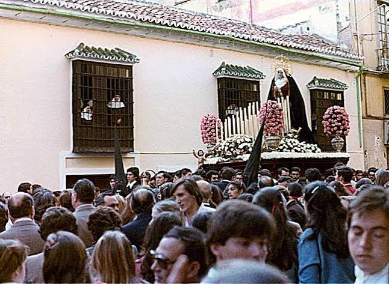
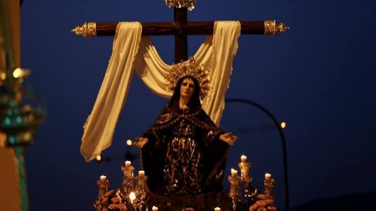
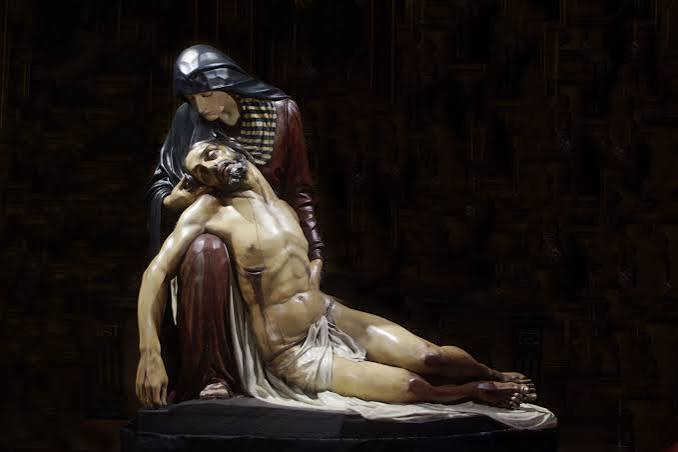
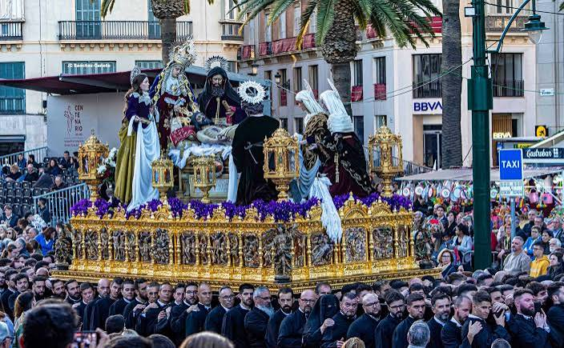
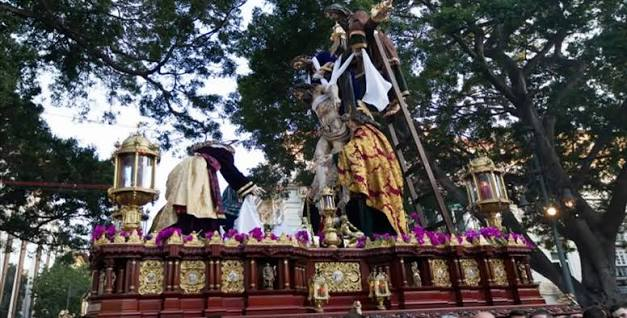
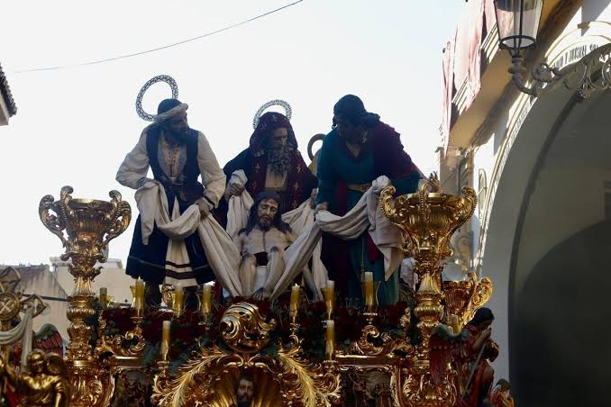
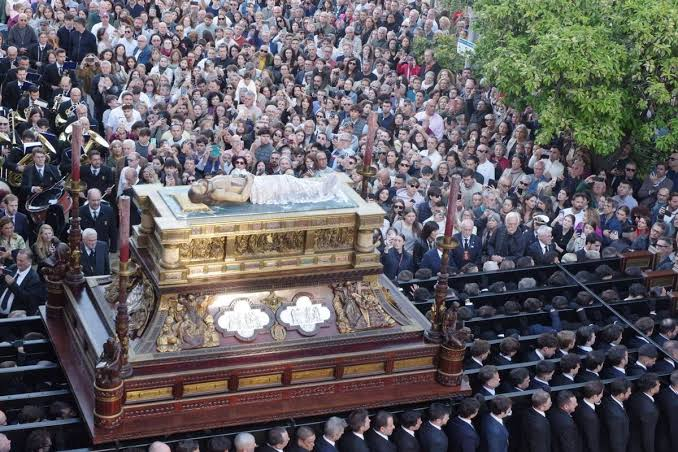
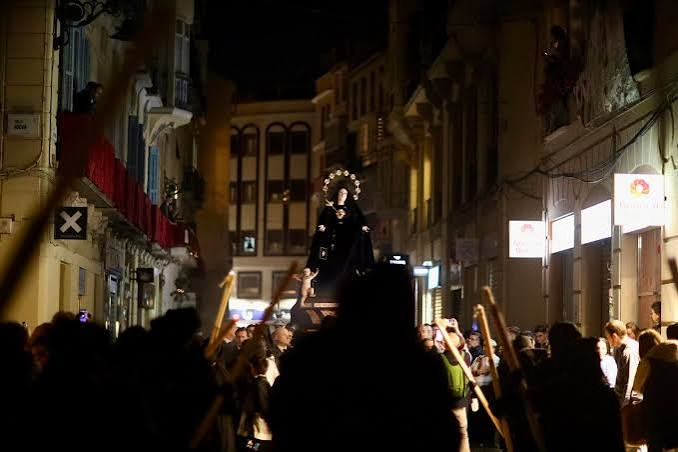

Historia, devoción y el caminar del Cautivo
El Viernes Santo sumerge a Málaga en el luto, el silencio y el recogimiento tras la muerte de Cristo. El estruendo de los días anteriores da paso a la rigurosa solemnidad de hermandades como el Santo Traslado, la Soledad de San Pablo, el Amor, el Descendimiento y la Piedad. La madrugada se envuelve en misticismo absoluto cuando se apagan las luces del centro para el paso de la Orden de Siervos de María (Servitas).

Dolores de San Juan
Referente del Viernes Santo por su sobriedad extrema. El desfile carece de acompañamiento musical, oyéndose únicamente el rítmico rudo de los bastones de los nazarenos.

Soledad de San Pablo
Una de las grandes devociones del barrio de la Trinidad. El imponente trono de la Virgen de la Soledad destaca por su luto riguroso y la solemnidad con la que camina por las calles.

Piedad
Hermandad del barrio de El Molinillo. El imponente grupo escultórico muestra a la Virgen sosteniendo el cuerpo sin vida de su Hijo recién bajado de la cruz.

Monte Calvario
Inicia su procesión desde el Monte Calvario. Su descenso por las laderas del monte al atardecer recrea una estampa sobrecogedora y mística de la pasión.

Descendimiento
Con sede en la Capilla del Hospital Noble. El misterio representa de manera impecable el momento en que bajan a Jesús de la cruz, con un cortejo clásico y elegante.

Santo Traslado
Una de las grandes devociones del barrio de la Trinidad. El imponente trono de la Virgen de la Soledad destaca por su luto riguroso y la solemnidad con la que camina por las calles.

Sepulcro
La procesión oficial de la ciudad de Málaga. El cuerpo yacente de Cristo va en una imponente urna de madera y plata, acompañado por la marcha fúnebre interpretada por la banda municipal.

Servitas
Es la última procesión de la noche. Se apagan por completo todas las luces del centro de la ciudad y la Orden avanza en estricto silencio rezando el rosario a oscuras.